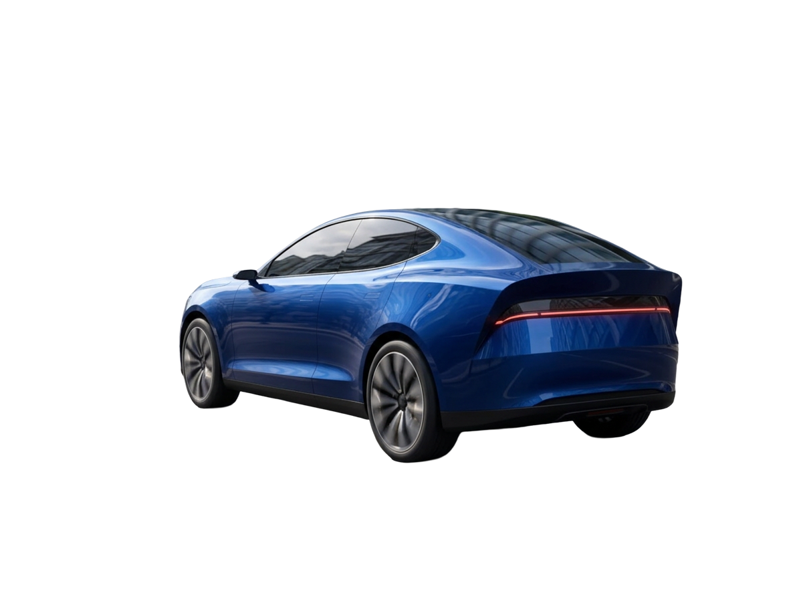
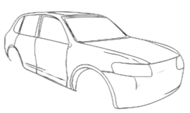
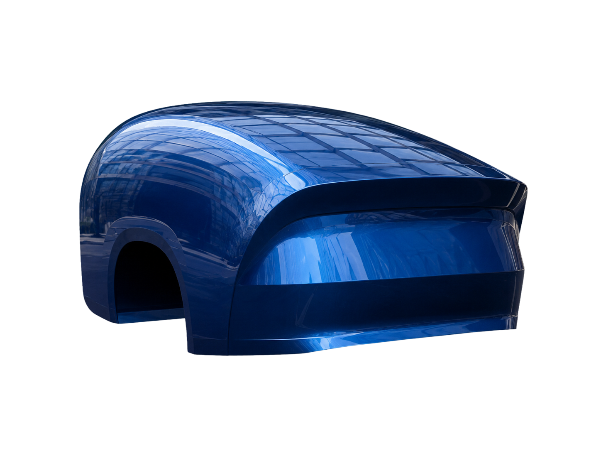
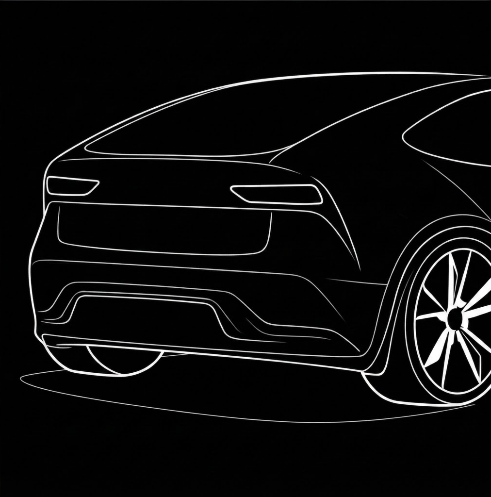
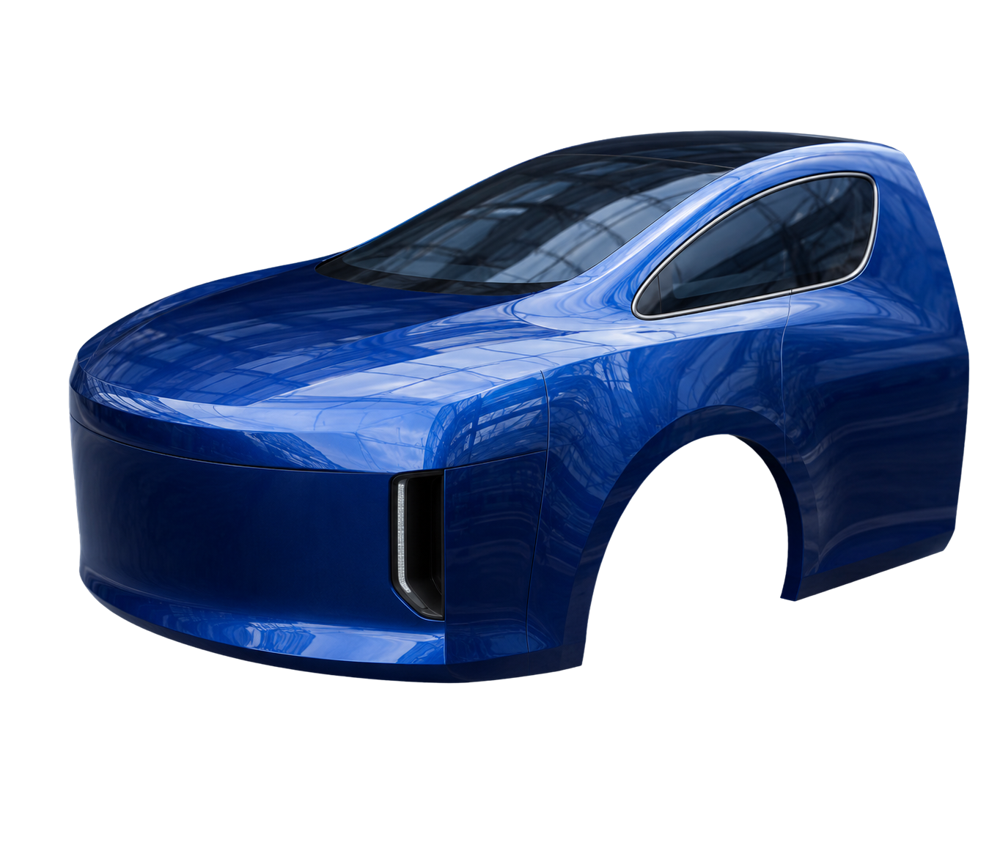
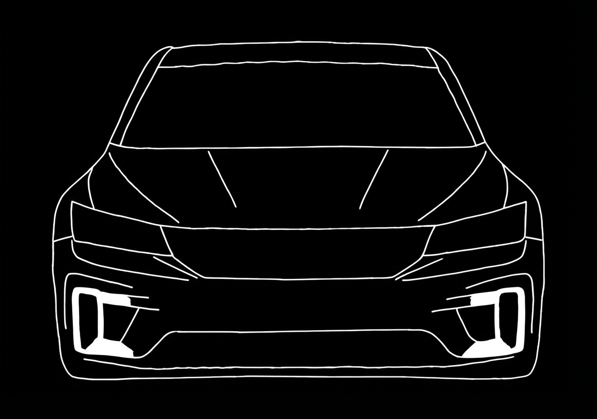
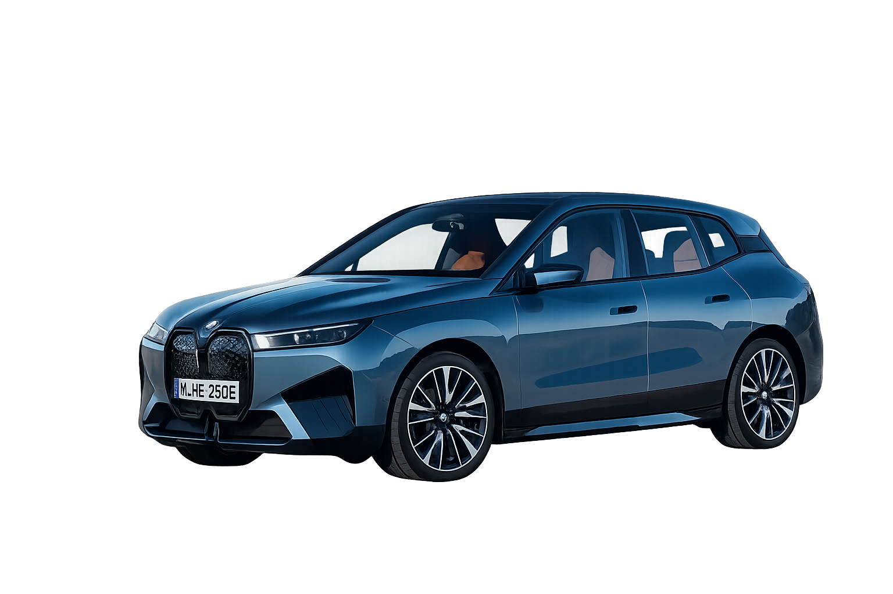

Aura.
Shaped by airflow.
Refined through evidence.


An SUV concept that brings body shape and airflow control into one design strategy.
- Discipline
- Transportation design
Design engineering - Scope
- Airflow analysis · CAD surfacing
Aero features · CFD - Design package
- Streamlined body
Kammback rear + front air curtains
01 / DEVELOP THE AERODYNAMIC PACKAGE
The aerodynamic
design package.
Explore the streamlined body, Kammback rear and air curtains, then compare their intended roles with the CFD findings.
Start with
surface continuity.
A raked front and smooth roof-to-rear surfaces aim to keep flow attached.


Give the airflow
a defined exit.
Rear taper, a sharp cut-off and concavity aim to control separation. CFD still showed a thick wake.
See what the CFD revealed

Guide air past
the wheelhouse.
Front ducts and a closed fascia aim to guide air past the wheels and limit wheelhouse ingestion.
Explore the wheel-flow evidence
02 / UNDERSTAND THE CONSTRAINTS
A larger body.
A more complex flow.
SUV height and frontal area make drag and crosswind stability linked constraints. The brief addresses three loss zones below.

THREE LOSS ZONES / EXPLORE THE PRIORITIES
01 Rear wake
Low base pressure behind the vehicle makes rear separation a priority.
02 Wheels & underbody
Wheel and underbody turbulence informs the air-curtain and lower-body design.
03 Surface continuity
Smoother body transitions aim to limit flow separation.
03 / TRANSLATE CONSTRAINTS INTO FORM
Body geometry
& airflow control.
Four body-form rules establish the geometry; the rear and wheel regions receive targeted features.
Raked A-pillar
Bring the front of the cabin into a more continuous body profile.
Smooth roof transition
Carry the roofline into the rear with fewer abrupt changes.
Enclosed arches
Consider the wheel region as part of the overall surface strategy.
Cleaner lower body
Reduce interruptions along the lower part of the vehicle.
Separation at the rear
A tapered Kammback rear with a sharp cut-off and rear concavity to define where separation occurs.
Flow around the wheelhouse
Front air-curtain ducts and a closed fascia to redirect flow past the front-wheel region.
04 / VALIDATE THROUGH CFD
CFD results:
the rear wake remains.
Steady RANS CFD identifies the rear wake as the dominant loss and the next refinement priority.
30.5 m/s
500 iterations
Results for this concept only; no before-and-after drag comparison or verified crosswind performance.
The wake still dominates.
The velocity field identifies rear-wake loss as the main issue to carry into the next design loop.
A defined cut-off.
A broad wake remains.
The thick wake shows that the rear cut-off still needs refinement.
Wheel flow is redirected.
The result supports further work on wheel flow and the underbody.
05 / RESOLVE, THEN REFINE
Next: refine
the wake and wheel flow.
Refine the rear wake, wheel region and lower-body flow, then reassess drag and stability together.